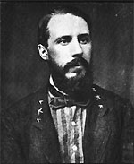

|

|

|
|
|
Confederate general and author Edward Porter Alexander was
born on May 26, 1835, on the Fairfield plantation in Wilkes
County, Georgia. His wealthy parents, Adam and Sarah
Alexander, demanded academic excellence from their ten
children and were disappointed that Alexander decided to
become a soldier. Graduated from West Point in 1857, he
stood third in his class and accepted a coveted commission
in the engineer corps. He married Virginian Bettie Mason
shortly thereafter.
Following Georgia's secession in 1861, Alexander left the
U.S. army and put his considerable engineering and
organizational skills to work for the Confederacy.
Commissioned as an artillery captain, he joined General
Pierre Gustave Toutant Beauregard's staff before First
Manassas and quickly became chief of ordnance and artillery.
Appointed colonel of artillery in General James
Longstreet's First Corps in 1862, Alexander saw significant
action at the Battles of Fredericksburg, Chancellorsville,
and Gettysburg. During the latter, he directed the artillery
bombardment that preceded Pickett's Charge. Promoted to
brigadier general in 1864, he spent the remainder of the war
as Longstreet's chief of artillery. After recovering from a
minor wound suffered at Petersburg in June, 1864, Alexander
rejoined the army for its final retreat and surrender in
1865.
During the 1870s and 1880s, Alexander built a postwar
career as a railroad executive, managing several Georgia
lines while mostly steering clear of the railroad industry
financial scandals that in 1892 forced his retirement. In
1897, President Grover Cleveland appointed Alexander to a
lucrative post as the American engineer responsible for
settling a border dispute between Costa Rica and Nicaragua.
Alexander published Military Memoirs of a
Confederate in 1907. Years earlier he had contributed
narratives based on his personal experiences to the
Southern Historical Society Papers and Century
Magazine's "Battles and Leaders of the Civil War"
series. In his later memoirs, Alexander evaluated the
campaigns he had witnessed in strictly military terms,
adopting a scholarly approach that former compatriots
mistook for arrogance. His harsh analysis of the Gettysburg
campaign condemned General Robert E. Lee's decision to
invade Pennsylvania, criticized Lee's use of offensive
battle tactics, and acquitted Longstreet of blame for the
Confederate loss.
Alexander died on April 27, 1910, in Savannah, Georgia.
Source: Joan Waugh, ed., Facts on File Encyclopedia of American
History: Civil War and Reconstruction, 1856 to 1869 (New York: Facts on
File, 2003), 7-8.
|